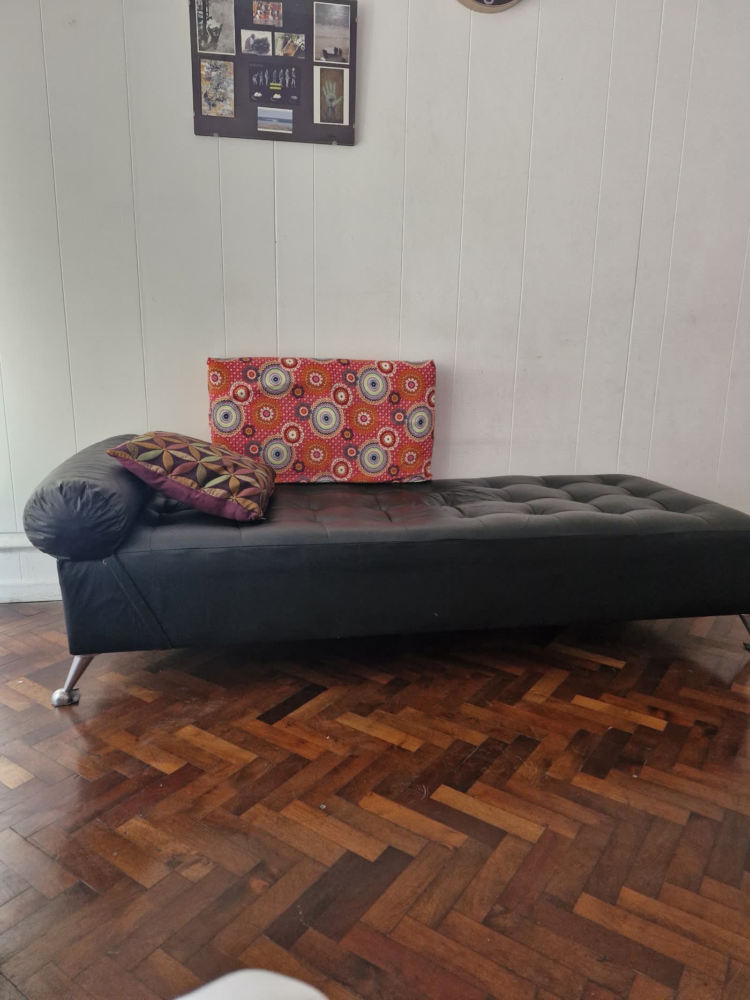

Lic. Guillermina FunesPsicóloga · Martínez
Un espacio para hablar de lo que te pasa.
Atención psicológica presencial en Martínez, de martes a viernes por la tarde.
Los botones de contacto se activan cuando arrancamos con la versión oficial.

Datos rápidos
- ConsultorioVélez Sársfield 20, Martínez
- Martes a viernesPor la tarde, desde las 14 h
- Primera entrevistaSe coordina por mensaje
El consultorio
Un lugar cómodo para empezar.
Pedir ayuda no siempre es fácil. Por eso el primer encuentro es para conocernos: contás qué te trae y vemos juntos cómo seguir.
Las sesiones son en Vélez Sársfield 20, en Martínez, en un ambiente reservado.
Cómo empezar
Tres pasos para la primera entrevista.
Escribime
Un mensaje corto alcanza: contame brevemente qué te trae.
Coordinamos el horario
Te propongo un día y una hora, de martes a viernes por la tarde.
Nos encontramos
La primera entrevista es en el consultorio de Martínez.
Horarios y dirección
De martes a viernes, por la tarde.
| Lunes | Cerrado |
|---|---|
| Martes | 14:00 a 20:00 |
| Miércoles | 14:00 a 20:00 |
| Jueves | 14:00 a 20:00 |
| Viernes | 14:00 a 17:00 |
| Sábado y domingo | Cerrado |
Martínez, Provincia de Buenos Aires Teléfono: 011 15-6603-6067
Escribime y coordinamos tu primera entrevista.
Consultorio en Martínez, de martes a viernes por la tarde.
Los botones de contacto se activan cuando arrancamos con la versión oficial.